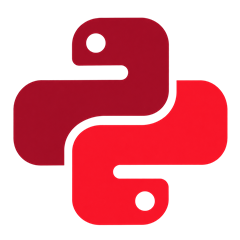

Gestão de corpo clínico
Seleção, alocação e acompanhamento de profissionais, com atenção ao perfil técnico, à integração da equipe e à rotina da instituição.

medicalt Serviços em Saúde Fale com a MedicaltCorpo clínico, serviços e tecnologia conectados à rotina de hospitais de média e alta complexidade.
De Goiás, ao lado das instituições de saúde.
Nascemos em Goiás para aproximar a gestão de corpo clínico das necessidades reais dos hospitais.
Mais do que disponibilizar profissionais, construímos equipes assistenciais sólidas. Unimos qualidade técnica, perfil humano e integração para apoiar uma assistência mais segura, eficiente e consistente.
Do corpo clínico à estruturação de serviços: uma atuação conectada às necessidades do seu hospital.
Converse sobre sua necessidadeProtocolos, acompanhamento da qualidade e eficiência operacional atravessam nossa atuação.
Seleção, alocação e acompanhamento de profissionais, com atenção ao perfil técnico, à integração da equipe e à rotina da instituição.
Organização de equipes, fluxos e protocolos para apoiar a operação da Unidade de Terapia Intensiva.
Apoio à estruturação do serviço e à integração entre profissionais, processos e rotina cirúrgica.
Seleção e gestão de equipes de fisioterapia integradas à assistência em ambientes de média e alta complexidade.
Atualização e desenvolvimento técnico das equipes, conectados às necessidades do serviço hospitalar.
Soluções para apoiar a gestão e a organização do ambiente hospitalar. O escopo é definido a partir das necessidades da instituição.
Áreas de atuação que se conectam à rotina assistencial da instituição.
Fale sobre sua equipeEquipes médicas para Unidades de Terapia Intensiva, com foco na organização assistencial, na integração e na continuidade do cuidado.
Profissionais especializados em cirurgia vascular, integrados às necessidades e aos fluxos da instituição hospitalar.
Equipes de cirurgia geral com qualificação técnica para atuar em conjunto com os demais serviços hospitalares.
Fisioterapia de alta complexidade, com equipes integradas à assistência e ao desenvolvimento de protocolos hospitalares.
Conhecer as necessidades, os fluxos e os desafios da instituição.
Alinhar perfis profissionais, processos e organização assistencial.
Apoiar as equipes e acompanhar a qualidade do serviço prestado.
Aprimorar protocolos e estimular a evolução técnica das equipes.
A atuação da Medicalt conecta profissionais de medicina, fisioterapia e gestão à realidade de cada hospital.
Em breve, conheça aqui os profissionais, suas trajetórias e áreas de atuação.
Converse com a MedicaltConte o que sua instituição precisa. A Medicalt está pronta para conversar sobre a estruturação e a gestão das suas equipes.